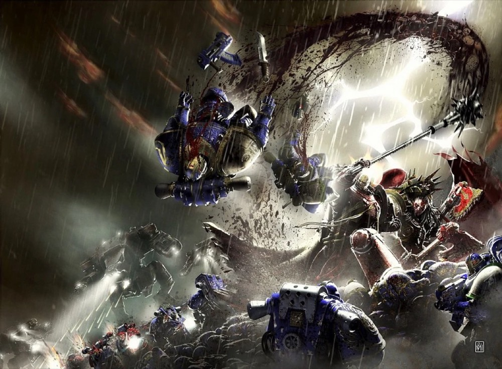
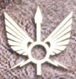
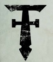

Shadow Crusade
| Shadow Crusade | |
|---|---|
| Part of the Horus Heresy | |
 Ultramarines and World Eaters fighting on Nuceria in the red rain of the Ruinstorm Artwork © Games Workshop | |
| Date | 007–008.M31 |
| Location | Realm of Ultramar, Eastern Fringe; Armatura; Nuceria |
| Result | Ultramar devastated and cut off. The Ruinstorm confirmed. Nuceria exterminated. Angron became a Daemon Prince. Guilliman gravely wounded and withdrawn |
| Belligerents | |
| Loyalists  Imperial Army of Ultramar | Traitors |
| Commanders and leaders | |
| † Killed in action · (WIA) Wounded | |
| Strength | |
 118+ Titans of Legio Lysanda and Legio Oberon | |
| Casualties and losses | |
| Ultramarines: | Traitors: |
| Billions of civilians killed; 100+ worlds of Ultramar razed; the entire population of Nuceria exterminated[1] | |
The Shadow Crusade was a joint campaign by the Word Bearers under Lorgar and the World Eaters under Angron against the Realm of Ultramar, in 007–008.M31, in the early years of the Horus Heresy. It began on the same day as the Battle of Calth, and it was the larger part of the Traitors' strike against the Ultramarines. The Legions swept through the Five Hundred Worlds, which were the domain of Roboute Guilliman, and devastated them. The campaign served the Traitors' purpose of closing the Eastern Fringe behind the Ruinstorm, so that no help could come from Ultramar to Terra.[2][3]
It ended on Nuceria, the home of Angron's captivity, where he and Lorgar were confronted by Guilliman. The primarch of the World Eaters became a Daemon Prince of Khorne in the course of the battle, and the people of Nuceria were killed to the last child. The campaign also gave rise, indirectly, to the Imperium Secundus, the second empire that Guilliman founded in Ultramar when the Ruinstorm cut him off from the Emperor.[2]
Background
[edit]The Ultramarines had humiliated the Word Bearers in 963.M30 at Khur, where Guilliman destroyed the city of Monarchia and made the Legion kneel in its ashes, and Lorgar had never forgiven him. In 005.M31 Horus gave Lorgar the opportunity he wanted. He drew the Ultramarines to Calth with false intelligence of an Ork threat, so that they could be destroyed by a surprise attack from the Word Bearers' main fleet. Lorgar chose the World Eaters, who had fought beside the Word Bearers at Isstvan, as his partners for the wider war on Ultramar.[3]
Lorgar had reasons of his own for wanting Angron. The World Eaters' primarch was the victim of the Butcher's Nails, cortical implants that his Nucerian captors had hammered into his skull in his youth. The implants drove him and his Legion into a continuous fury and were killing him by degrees. Lorgar alone of the primarchs claimed to understand what ailed him, and he intended to drag his brother into immortality in the service of the gods whether he wished it or not.[2]
The plan
[edit]The Traitor armada was divided into at least six fleets. Erebus and Kor Phaeron were given the main body of the Word Bearers fleet, nearly seventy capital ships, and took it to Calth. Zadkiel, a Word Bearers captain, was given the Furious Abyss, a prototype battleship from the Dark Mechanicum, to attack Macragge. Lorgar and Angron took a smaller fleet that included the world-killing Trisagion and Blessed Lady, with the primarchs' flagships, the Fidelitas Lex and the Conqueror. The remainder, a large number of the swift cutters and interdictors of the World Eaters and the few fast strike craft of the Word Bearers, were sent across Ultramar to raid its colonies. They were not to hold anything. They were to burn it.[3]
The war in Ultramar
[edit]After Calth
[edit]Almost half of the Ultramarines Legion was dead or hurt after Calth. The Ruinstorm was closing in and the astropathic channels were failing. Each world of the realm was alone. The 19th, 24th and 25th Chapters, which had not been at Calth, were scattered through the realm, and they faced the main strength of two Legions.[3]
The Furious Abyss
[edit]Kor Phaeron's plan was to strike at the heart of Ultramar while Lorgar and Angron tore at its edges. The Furious Abyss was to ride out the fire of Macragge's fleet and defences and then drop its cargo of virus bombs on the world. Chronicles agree that it was stopped before it could do so. The Ultramarines record it as the work of a scratch force under Captain Lysimachus Cestus. The Space Wolves record that some of their own were aboard. In either account it was destroyed from within at the cost of every life of those who boarded it.[3]
Astagar
[edit]Some worlds were saved. At Astagar, in about 007.M31,[a] a force of 600 Ultramarines under Lucretius Corvo met an invading fleet of five battle cruisers. Corvo sent his own ships ahead of the enemy to meet them in the void and landed his Legionaries to fight on the ground, alongside seventy thousand Astagarian Light Rangers. When the Traitors landed at the capital, Eurythmia Civitas, he fought them in the streets and lured a daemon-possessed Warlord Titan into the open. Concentrated Shadowsword fire killed the Titan, and the invaders lost heart. The Ultramarines then drove them from the planet.[3]
Percepton
[edit]Percepton Primus, attacked in 008.M31, was not so fortunate. The Word Bearers destroyed more than half of the Ultramarines' ships in the opening attack and crippled the defenders in twenty-seven minutes, though the fighting lasted 163 days. Decimus, Master of the 17th Chapter, had his Titans destroyed from orbit and his vox jammed by whispers. When he judged that the planet could not be held, he sent five censured Ultramarines to the cruiser Righteous Fury, which had survived in high orbit, to persuade her shipmistress to bombard the planet with phosphex. Decimus told his Legionaries at the last moment. He then led them in a charge against the Word Bearers as the fire fell on the planet, and burned the Traitors and the loyalists together.[3]
Other worlds, such as Espandor and Latona, suffered raids of a different kind. Their agri-colonies and industrial spires were burned and their people killed, with no attempt to hold them.[3]
Armatura
[edit]The main force, led by Lorgar and Angron, swept through scores of worlds. Imperial accounts give different numbers. The earliest records of the campaign speak of twenty-six worlds destroyed in rapid succession. Later Ultramarine tallies, taking in the minor colonies, speak of more than a hundred. Both agree that the Traitors reached the war world of Armatura, which was the Legion's principal arsenal.[2]
There the Ultramarines made a stand. They drew the World Eaters into the ruined capital, then brought the main quarter down on them. Many World Eaters and Angron himself were buried under rubble. The primarch dug his way out with his twin chainaxes, Gorefather and Gorechild, and wore the teeth off them. He threw them aside, since a weapon that cannot cut is bad luck by the gladiatorial custom of Nuceria. Kharn, his equerry, found Gorechild and had it repaired. He carried it from that day.[3]
Lorgar noticed during the campaign that Angron was getting worse. The Butcher's Nails were killing him faster than anyone had thought. His mind broke in the months after Calth, late in 007.M31. Lorgar persuaded him to go back to Nuceria, where the masters of the games who had put the Nails in him might know their workings, and where the primarchs might learn the secret of the implants and then destroy the world.[2]
Nuceria
[edit]The Ultramarine reprisal
[edit]Guilliman had pursued the Word Bearers since Calth. His retribution fleet of 41 vessels came out of the Warp at the edge of the Nuceria system aboard the Courage Above All. It was cobbled together from several fleets, and it had been unable to wait for more. The Ultramarines ran alongside the Traitor fleet exchanging broadsides, while smaller ships struck the Fidelitas Lex, and boarded the Conqueror, which was commanded by the ship's captain Lotara Sarrin. The Armsman came alongside the Conqueror, while smaller vessels slipped past her to drop pods on the surface. The Fidelitas Lex, stripped of her cathedral spires and her guns, burned and fell into the ocean of Nuceria.[3]
The Ultramarines who landed were not the pristine blue warriors of Armatura. Their armour was cracked and scorched from Calth, and they fought with cold intensity. The World Eaters, bound to the Butcher's Nails, fell on them in packs. The Word Bearers advanced behind black hymns and the icons of their Legion.[3]
The duel of the primarchs
[edit]Guilliman found Lorgar in the fighting. Neither made a speech. Guilliman's fist met Lorgar's crozius, and the two backed apart from the flare. Lorgar struck him on the side of the head with the crozius so hard that half of his face was lost in blood. Guilliman broke Lorgar's breastbone with a blow. Both were badly hurt.[3]
Angron broke from the Ultramarine ranks, his armour wrecked and both chainswords running with gore. He had come ashore, visited the ridge of Desh'elika where his gladiator brothers and sisters had died, and found their bones still there. In the city of Desh'ea he was told that he had fled the battle. Furious, he ordered the Legion to kill everyone in the city and then everyone on the planet. He saw Guilliman and Lorgar fight, and he turned on Guilliman.[2]

The apotheosis
[edit]Angron's skull-bandolier carried bones from the grave at Desh'elika. When Guilliman's boot broke one of the skulls, Angron threw himself at him with a cry that no mortal could have made. Lorgar saw the Warp rise behind the veil. He chanted in a language never spoken by a living being, and the Ruinstorm opened over Nuceria in a crimson rain formed from the ghosts of a hundred murdered worlds. Lorgar called to the Neverborn, and the daemons answered. Angron's body began to tear itself apart and grow, and his muscles locked. He was transformed into a Daemon Prince of Khorne.[2]
The World Eaters' few remaining Librarians, nineteen in all, who had never been given the Butcher's Nails, sensed it and joined their minds into a gestalt called the Communion. It seized Lorgar's soul and fought him in the Warp, and lost. The newborn daemon turned on them and killed them all. The Legion's Librarius, the last fragment of its old life as the War Hounds, was gone, which pleased Khorne, who tolerates no psyker among his chosen.[3]
Guilliman, gravely wounded, escaped. He could neither face nor understand what his brothers had become. The World Eaters finished their purge of Nuceria. Not one living human was left, and Angron left the world and did not think of it again. Lorgar considered that he had saved his brother's life. The Shadow Crusade could move on from Ultramar and rejoin Horus, and the next target of the Traitors was Terra.[2]
Imperium Secundus
[edit]
The Ruinstorm, raised at Calth and fed by the Shadow Crusade, left Guilliman cut off from the Imperium. He could not tell whether the Emperor lived or whether Terra had fallen. In 009.M31, in the face of this, he set up a second human empire on the Eastern Fringe, the Imperium Secundus, which Imperial scholars also call the Unremembered Empire. It was anchored on Macragge and took in some five hundred worlds, the Realm of Ultramar. The Ultramarines had learned to steer through the Warp without the Astronomican by means of the Pharos, an alien machine discovered on the world of Sotha.[2]
Guilliman did not want to rule. He considered it the act of a usurper like Horus. The Lion's fleet, the Dark Angels Legion, arrived unexpectedly out of the Thramas Sector, and Sanguinius arrived afterward. In the end the Blood Angels' primarch was named Imperator Regis, with Guilliman as chief adviser and the Lion as Lord Protector. The three primarchs sat in the stone hall in which Guilliman had set twenty-one chairs, one for the Emperor and each of his sons. The empire was dissolved in about 011.M31, before the Siege of Terra, when its rulers learned that the Emperor lived. Guilliman afterwards held it to be one of his greatest mistakes, and when he returned in the 41st millennium he did not wish to discuss it.[3][4]
Few records of the Imperium Secundus survive, since many were destroyed and the Ruinstorm obscured the rest. The best attested episode is the destruction of the world of Davin by the three primarchs.[3]
Legacy
[edit]The Shadow Crusade is the work in which the Word Bearers' purpose is most openly displayed. It was meant to inflict as much suffering as possible, to feed the Ruinstorm, and it succeeded. Imperial scholars note that the World Eaters' fall to Khorne was settled at Nuceria. The Ultramarines remember Armatura as a victory, Calth as a survival and Nuceria as the day on which their primarch learned what his brothers had become.[1]
Timeline
[edit]| Date | Event |
|---|---|
| 963.M30 | Roboute Guilliman razes Monarchia on Khur; Lorgar never forgives him. |
| 005.M31 | Horus orders the Ultramarines to Calth; Lorgar chooses Angron and the World Eaters as partners. |
| 005–006.M31 | The Word Bearers and World Eaters fight at Isstvan III and the Isstvan V. |
| 007.M31 | The Battle of Calth and the invasion of Ultramar begin on the same day; the Ruinstorm rises. |
| 007.M31 | The Furious Abyss is destroyed before it can reach Macragge. |
| c. 007.M31 | Lucretius Corvo saves Astagar.[b] |
| c. 007–008.M31 | The Ultramarines stand at the arsenal world of Armatura; Angron is buried under its capital.[c] |
| 008.M31 | Percepton Primus is lost after 163 days; Espandor and Latona are raided. |
| 008.M31 | The Battle of Nuceria: Guilliman duels Lorgar, and Angron becomes a Daemon Prince of Khorne. |
| 008.M31 | The World Eaters kill every living human on Nuceria; the Traitors leave Ultramar. |
| 009.M31 | Guilliman proclaims the Imperium Secundus at Macragge. |
| c. 011.M31 | The Second Battle of Davin; the Imperium Secundus is dissolved. |
| 014.M31 | Lorgar and Angron join the Siege of Terra. |
See also
[edit]
Notes
[edit]References
[edit]- ^ a b c Reynolds, Anthony. The Purge (novella). Black Library. Bligh, Alan. The Horus Heresy - Book Five: Tempest (Forge World Series). Black Library, pp. 20-21, 145.
- ^ a b c d e f g h i Reynolds, Anthony. Chosen of Khorne (Audio Drama). Black Library. Haley, Guy. Dark Imperium (novel). Black Library, Ch. 3.
- ^ a b c d e f g h i j k l m n o Dembski-Bowden, Aaron. Butcher's Nails (Audio Book). Black Library. Dembski-Bowden, Aaron. Betrayer (novel). Black Library.
- ^ Abnett, Dan. Know No Fear (novel). Black Library. Counter, Ben. Battle for the Abyss (novel). Black Library.